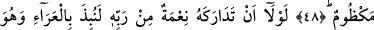
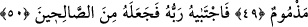
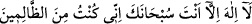
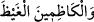
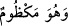

BALIK SÂHİBİ
YUNUS GİBİ OLMA!
48. Sen Rabbinin hükmünü sabırla bekle. Balık sâhibi (Yunus) gibi olma. Hani o,
dertli dertli Rabbine niyâz etmişti.
49. Şâyet Rabbinden ona bir nimet yetişmemiş olsaydı o, mutlaka, kınanacak bir
hâlde ıssız bir diyara atılacaktı.
50. Fakat ardından, Rabbi onu seçti (vahiy verdi) ve onu sâlihlerden kıldı.
“Sen Rabbinin” onlara mühlet verme ve senin onlara karşı zaferini geciktirmesi
“hükmünü sabırla bekle.” Can sıkıntısı çekmede ve kavmine âcilen cezâ verilmesi
isteğinde “balık sâhibi (Yunus) gibi olma,” acele etme ve gönül darlığına düşme.
“Hani o, gamla dolu olarak” balığın karnında
“Senden başka hiçbir ilâh yoktur. Seni tenzih ederim, gerçekten ben zâlimlerden
oldum” (el-Enbiyâ, 21/87) şeklinde “Rabbine niyâz etmişti;” Allah’a duâ edip
yalvarmıştı.
Âyette yer alan “mekzûm” kelimesi, “gamla dopdolu” anlamındadır. Arapçada bu
kelimenin “dopdolu” anlamına geldiği şu kullanımından anlaşılmaktadır: “Kezame’s-
sıkâe” dendiğinde bundan, o kişinin su dağarcığını ağzına kadar doldurduğu ve ağzını
sıkı bir şekilde bağladığı anlaşılır. Bu kelime, Kur’an-ı Kerim’de başka bir yerde: “ şeklinde kullanılmaktadır ki,”O takvâ sâhipleri… öfkelerini yutarlar”
(Al-i, İmran, 3/134) anlamındadır. Peygamber Efendimiz de bu kelimenin geçtiği bir
hadislerinde şöyle buyururlar: “Her kim -yapmaya imkânı varken- öfkesini yutarsa
Allah onun kalbini güven ve îmanla doldurur.” [57]
“Gamla dolu olarak” şeklinde tercüme edilen “ ifâdesi, dilbilgisi
kurallarına göre hâl cümlesi olup yasak bunun üzerine odaklanmıştır. Çünkü bu ifâde,
“can sıkıntısı ve kızgınlık”tan ibârettir. Nitekim böyle olduğu, “Zünnûn’u da (Yunus’u
da) zikret; hani o öfkeli bir hâlde geçip gitmişti” (el-Enbiya, 21/87) âyet-i
kerîmesinde de açıkça belirtilmektedir. Bu bakımdan yasaklık, aynı âyette yer alan
“nidâ/sesleniş” üzerine odaklanmış değildir. Çünkü nidâ güzel görülmüş bir hareket
olduğundan âyette “kime nidâ edildiği” açıkça zikredilmemektedir.
Dilbilgisi kurallarına göre “iz” edâtı, mahzûf bir muzâftan dolayı mansubtur. Buna
göre âyet-i kerîmeye şöyle mânâ verilebilir: “Rasûlüm! Senin hâlin Yunus (a.s.)’ın gam